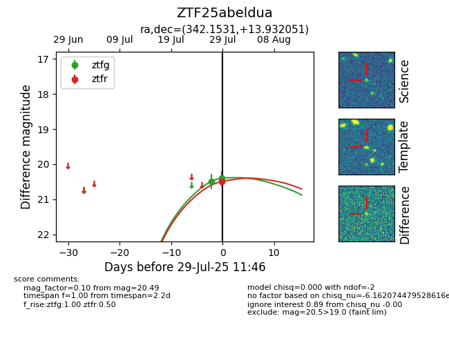

Target ZTF25abeldua at 2025-07-29 11:46, see:
FINK: fink-portal.org/ZTF25abeldua
Lasair: lasair-ztf.lsst.ac.uk/objects/ZTF25abeldua
ALeRCE: alerce.online/object/ZTF25abeldua
alt names
ZTF25abeldua (ztf,fink)
coordinates:
equatorial (ra, dec) = (342.1531,+13.93205)
galactic (l, b) = (83.1293,-39.26505)
photometry
last ztfg=20.40, ztfr=20.49
2 ztfg, 1 ztfr detections
